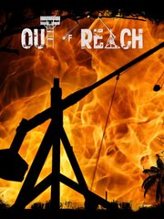

Out of Reach
Out of Reach
Detalles
|  | |
| Tiempo de juego | 4h 35m 0s |
| Última actividad | 19/09/2016 19:42:02 |
| Añadido | 23/07/2021 17:30:21 |
| Modificado | Nunca |
| Estado de finalización | Jugado |
| Librería | Steam |
| Fuente | Steam |
| Plataforma | PC (Windows) |
| Fecha de lanzamiento | 13/07/2018 |
| Puntuación de la Comunidad | 58 |
| Puntuación de la Crítica | |
| Puntuación de usuario | |
| Género | Action Adventure Indie Massively Multiplayer RPG Simulation |
| Desarrollador | Space Boat Studios |
| Editor | Space Boat Studios |
| Característica | Achievements Co-Op Cross-Platform Multiplayer MMO Multi-Player Online Co-Op Online Pvp Pvp Remote Play Together Shared/Split Screen Pvp Single Player Trading Cards Valve Anti-Cheat Enabled |
| Enlaces | Community Hub Discussions Guides News Store Page PCGamingWiki Achievements |
| Tag | |
Descripción
Our other games
https://store.steampowered.com/app/867400/Out_of_Reach_Treasure_Royale/
https://store.steampowered.com/app/1518330/Pirate_Simulator/?utm_source=banner&utm_campaign=oor
Recent major updates
Sea transportation
- Along with big galleons and wrecks of them, the pirate merchants started to visit the islands on their ships from time to time, don't forget to check what they offer!
- Swimming between islands is not always the best idea, try the new sail boat! Enjoy its speed, easy-to-use ship's wheel, mountable cannons and ballista!
- Remember that boat can get damaged, sink or burn! Be sure to take resources to repair holes and beware of fire on the deck!

Boat sailing / Pirate merchants
Pirate NPCs!
- The pirates stopped by the islands and made themselves comfortable among ancient ruins - the new biom.
- Make sure you don't approach them closer than bullets range, but if you do and still survive, don't forget to search the treasure chest!

NPC pirates / Ancient ruins
Ship wrecks events
- After every storm, there's a chance for survivors and bad luck for sailors to crash into sea rocks.
- Each ship wreck contains several chests on one of 3 levels and random loot inside.
- Don't forget to check the ocean bottom when treasure hunting!

Treasure hunting / Ship wrecks exploring
Pistols and cannons
- Long-awaited gunpowder arrived to the islands along with pirate merchants. From now on, everyone who has resources to craft or gold coins to purchase can get a flintlock pistols and take his piracy to the next level.
- If that's not enough, cannons should do the job. Mount one on each side of your boat and start ruling the oceans!

Ship burning / Cannon shooting
Personal and clan achievements
- Besides standard Steam achievements, every player gets their own skill points after doing certain activities on the archipelago. Gathered points are divided between 8 groups and can be assigned to 24 passive skills.
- Clan members on the other side, can fight for the good of their clan and conquer as many territories as possible to become the Conqueror of the Week, get better clan rank visible on clan's flag and a great reward paid in gold.

Skills and perks / Island conquering
Other updates:
- Island claiming! status: Released!
- Improved 6th sense! status: Released!
- Female pirates! status: Released!
- Character customization! status: Released!
- Experimental Battle mode status: Experimental and to be tested
Area Control mode

Completely new game-changing mode available from 13 Feb 2017 on every official Standard and PvP server.
The point is not only to survive, build and explore but also to take over territories, defend them and try to beat other clans by the end of each week!Players have to:
- join a clan or create one
- customize their flag and hang it on top of flag masts to conquer up to 12 territories
- make use of received bonuses to gathering from each taken territory
- take over opponents' areas by hanging the flag and gathering more points
- increase flag points and influence over each territory by fighting other clans and destroying their properties
- fortify and protect borders of their territories
- use siege weapons, boats and gliders to reach strategical positions, lead in a clan ranking and get new ranks and rewards
About the Game

The one who said that a combination of thunder storms and sea rocks is the worst thing that can happen to sailors, clearly didn't have to survive one. The real deal starts the morning after, and this is the exact time when you, dear player enter the cruel world of Out of Reach.
Although the archipelago was considered deserted before ships started to crash into sea rocks nearby, every kind of area on the island has its natural inhabitants who just don't give a warm welcome. Thinking twice every time before moving ahead could be one of the smartest things to do.
Staying on a beach after crushing your boat allows you to hunt for slowly moving animals and gives the ability to see at long distances. Disadvantage - you can be seen from exactly the same distance and there's always someone to call you his own slow-moving food.
In order to stay on the top of the food chain, you need to work harder than others. Everything starts from finding certain resources. Chop trees, mine stone, gather flax and food. Equip yourself and start searching for more sophisticated materials like copper and tin to produce bronze and other alloys.
Use a variety of workshops, furnaces and tools to craft armour and weapons. Check which combination of gear has better performance and suits your game style best. Upgrade equipment using new resources or items obtained in battle. Store, collect or trade your stuff with other players!
Looking for a place to store your timber or a quiet and cosy room to forge a sword and tan a skin of an elephant? Build your own stronghold! Use dozens of building elements like walls, stairs and floors to assemble the house of your dreams in an environment of your choice... or just take control of one.
The best solutions to problems are most often invented during battles. Everyday life on islands full of castaways is not an exception. To successfully protect your territory or gain control of a new one, you will need the advantage.- Ballista
The greater the distance, the safer you are. Ballista may be slow to load and unable to move but the ability to pierce a target with a 1,5m dart few hundred meters away in no time shouldn't be underestimated. - Trebuchet
Unusual situations require extraordinary solutions. When an axe doesn't help or doors are just too thick it's time for a trebuchet. Construction costs both time and resources but nothing surprises like a forced entry through a wall. - Traps
Well, there's actually one thing that surprises more - a tricky and deadly trap! Use trip wires at the doors, stairs or wherever you want, connect them with ballistae or boulder throwers, place a bait and wait for the unwelcome guests. - Glider
When everything fails, you might consider an attack from above. Construct a tower, install a launcher ramp and take off on a glider to bomb enemies' bases, get through walls or just take a look from a different perspective.
- Ballista